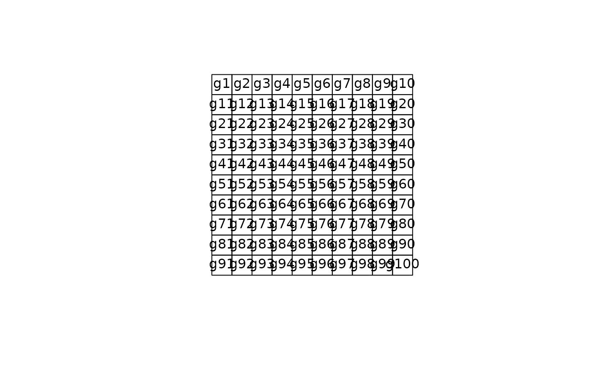
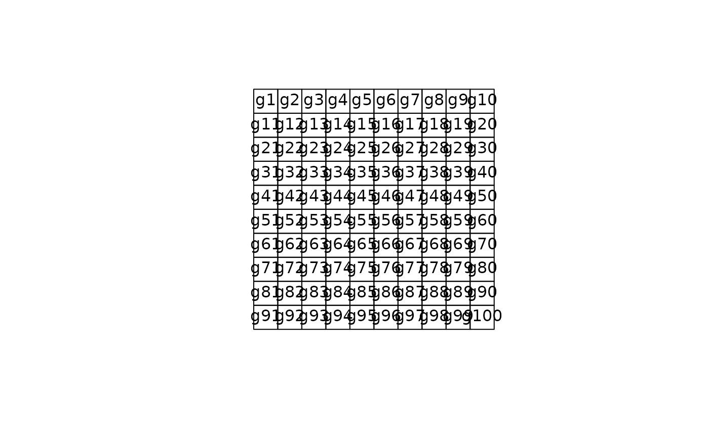

Class "SpatialPolygons"
SpatialPolygons-class.Rdclass to hold polygon topology (without attributes)
Objects from the Class
Objects can be created by calls to the function SpatialPolygons
Slots
polygons:Object of class
"list"; list elements are all of class Polygons-classplotOrder:Object of class
"integer"; integer array giving the order in which objects should be plottedbbox:Object of class
"matrix"; see Spatial-classproj4string:Object of class
"CRS"; see CRS-class
Extends
Class "Spatial", directly.
Methods
Methods defined with class "SpatialPolygons" in the signature:
- [
signature(obj = "SpatialPolygons"): select subset of (sets of) polygons; NAs are not permitted in the row index- plot
signature(x = "SpatialPolygons", y = "missing"): plot polygons in SpatialPolygons object- summary
signature(object = "SpatialPolygons"): summarize object- rbind
signature(object = "SpatialPolygons"): rbind-like method
plot method arguments
The plot method for spatial polygons takes the following arguments:
- x
a SpatialPolygons object
- col
a vector of colour values
- border
default
par("fg"); the colour to draw the border- add
default FALSE; if TRUE, add to existing plot
- xlim, ylim
default NULL; ranges for the plotted ‘x’ and ‘y’ values
- xpd
default NULL; controls clipping, see
par- density
default NULL; the density of shading lines, in lines per inch, see
polygon- angle
default 45; the slope of shading lines, given as an angle in degrees (counter-clockwise), see
polygon- pbg
default NULL, set to
par("bg")by default “transparent”; the colour to paint holes- axes
default FALSE; draw axes
- lty
default
par("lty"); border line type- ...
other arguments passed through
- setParUsrBB
default FALSE; see
Spatial-classfor further details- usePolypath
default NULL to set from option value; use
polypathfor hole-handling in plot- rule
default NULL to set from option value; character value specifying the path fill mode, see
polypath
The options for usePolypath and rule may be retrieved with get_Polypath (default TRUE on package load) and get_PolypathRule (default “winding” on package load), and set with set_Polypath and set_PolypathRule
The class definitions used for polygons in sp do not accord with those of
the simple features specification of the Open Geospatial Consortium. The rgeos package, an interface to Geometry Engine – Open Source (GEOS), uses this
specification, in which each hole (interior ring) must be associated with
its containing exterior ring. In order to avoid introducing incompatible
changes into the class definition of Polygons objects, a comment has been
added as a single character string to each such object. Here we can trust
the data source to assign the hole status correctly, and use round-trip coercion to sf to add such comments to each Polygons member of
the polygons slot of this SpatialPolygons object. Exterior rings are coded
zero, while interior rings are coded with the 1-based index of the
exterior ring to which they belong. SpatialPolygons objects created by reading using sf or terra have the comments set on input, as OGR also uses SFS.
Refer to Bivand et al. (2013), pages 47-48 and 132-133 for a further discussion.
Note
rbind calls the function SpatialPolygons, where it is
checked that all IDs are unique. If rbind-ing SpatialPolygons without
unique IDs, it is possible to set the argument makeUniqueIDs = TRUE, although
it is preferred to change these explicitly with spChFIDs.
References
Roger Bivand, Edzer Pebesma and Virgilio Gomez-Rubio, 2013. Applied spatial data analysis with R, Second edition. Springer, NY. https://asdar-book.org/
See also
Examples
# simple example, from vignette("sp"):
Sr1 = Polygon(cbind(c(2,4,4,1,2),c(2,3,5,4,2)))
Sr2 = Polygon(cbind(c(5,4,2,5),c(2,3,2,2)))
Sr3 = Polygon(cbind(c(4,4,5,10,4),c(5,3,2,5,5)))
Sr4 = Polygon(cbind(c(5,6,6,5,5),c(4,4,3,3,4)), hole = TRUE)
Srs1 = Polygons(list(Sr1), "s1")
Srs2 = Polygons(list(Sr2), "s2")
Srs3 = Polygons(list(Sr3, Sr4), "s3/4")
SpP = SpatialPolygons(list(Srs1,Srs2,Srs3), 1:3)
plot(SpP, col = 1:3, pbg="white")
 grd <- GridTopology(c(1,1), c(1,1), c(10,10))
polys <- as(grd, "SpatialPolygons")
plot(polys)
text(coordinates(polys), labels=row.names(polys))

grd <- GridTopology(c(1,1), c(1,1), c(10,10))
polys <- as(grd, "SpatialPolygons")
plot(polys)
text(coordinates(polys), labels=row.names(polys))
